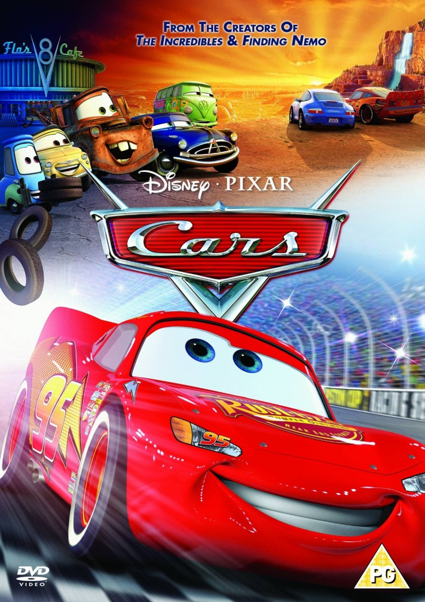
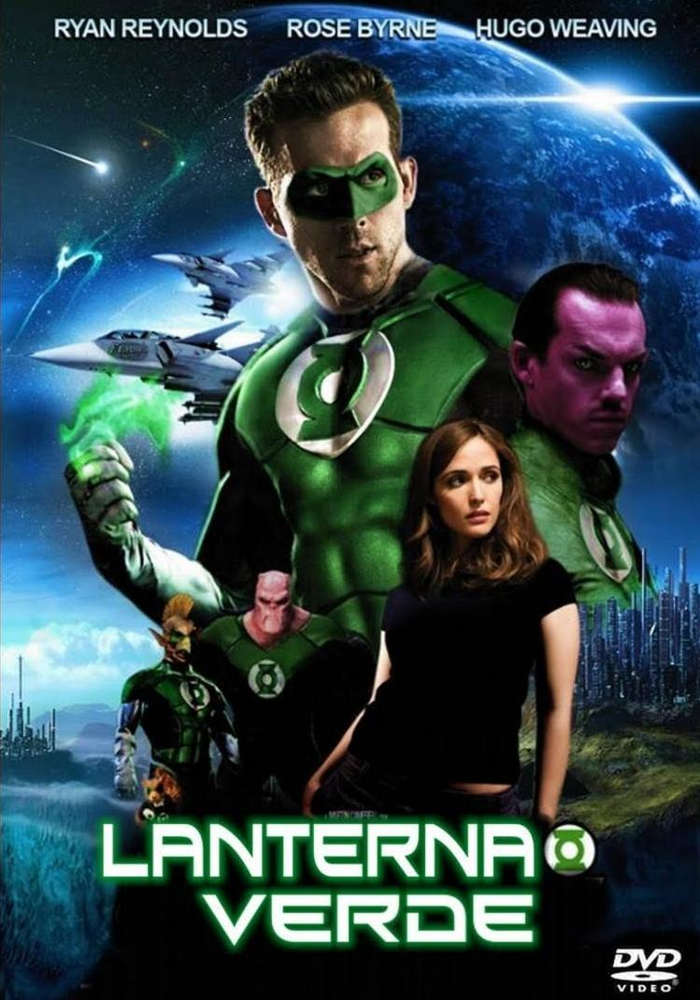

Homem Aranha 2

Em Homem-Aranha 2, após derrotar o Duende Verde, a vida de Peter Parker (Tobey Maguire) muda por completo. Enquanto precisa lidar com seus problemas particulares Peter recebe ainda uma má notícia: o surgimento do Dr. Octopus (Alfred Molina), um homem que possui tentáculos presos ao corpo que através de uma descarga elétrica queima o aparelho de comando dos tentáculos e vira um perigoso vilão.
Batman Begins

Marcado pelo assassinato de seus pais quando ainda era criança, o milionário Bruce Wayne (Christian Bale) decide viajar pelo mundo em busca de encontrar meios que lhe permitam combater a injustiça e provocar medo em seus adversários. Após retornar a Gotham City, sua cidade-natal, ele idealiza seu alter-ego: Batman, um justiceiro mascarado que usa força, inteligência e um arsenal tecnológico para combater o crime.
X-Men: Primeira Classe

Em X-Men: Primeira Classe, Charles Xavier conhece Erik Lehnsherr, filho de judeus que foram assassinados pelos nazistas durante a Segunda Guerra Mundial. Erik apenas escapou graças ao seu poder mutante de controlar metais, que permitiu que fugisse para a França. Charles e Erik logo se tornam bons amigos. Em 1965, Charles decide usar seus poderes psíquicos para ensinar jovens alunos mutantes a usarem seus dons para fins pacíficos.
Carros

Relâmpago McQueen (Owen Wilson) é um carro de corridas ambicioso que sonha em se tornar o 1º estreante a vencer o campeonato. No entanto Mack seu caminhão de viagem termina dormindo em pleno trânsito, o que faz com que a caçamba se abra e Relâmpago, que também estava dormindo, seja largado em plena estrada. Ao acordar Relâmpago em seu desespero chega à pequena Radiator Springs.
Lanterna Verde

Hal Jordan (Ryan Reynolds) é um audacioso piloto de aviões que foge de qualquer responsabilidade. Um dia, aHal ao ser envolto em uma redoma verde e levado até um alienígena prestes a morrer que lhe entrega um estranho anel e diz que ele foi escolhido, além de alertar sobre as responsabilidades de possuí-lo. Ao usá-lo Hal torna-se o Lanterna Verde, tendo condições de moldar a luz verde da forma como sua imaginação permitir.